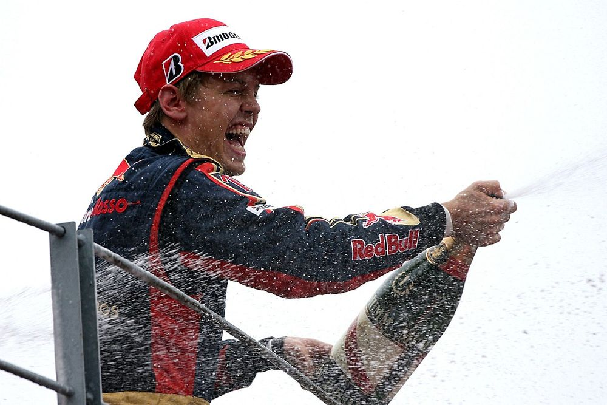
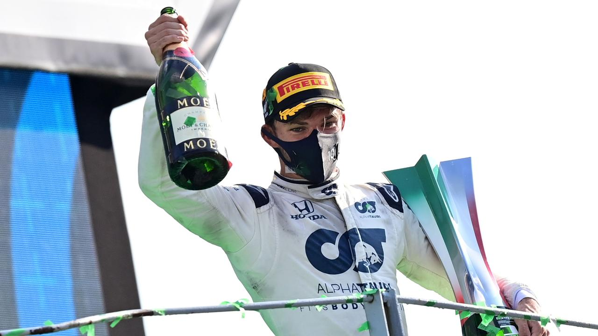
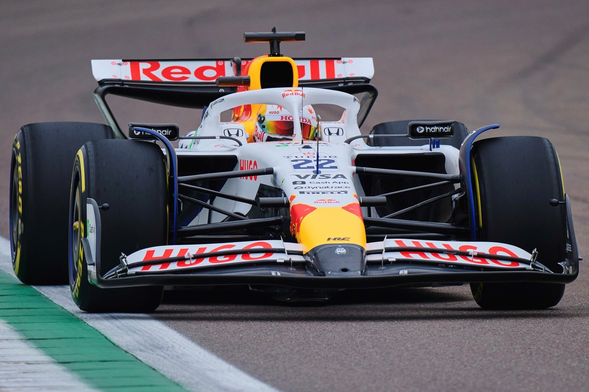

Racing Bulls

The History of Racing Bulls
Racing Bull, originally Toro Rosso, was established as Red Bull's junior team despite them winning a race before the main team.
Toro Rosso
Racing Bulls, originally known as Toro Rosso, was established in 2006 as a sister team to Red Bull Racing. The team's primary objective was to provide a platform for young drivers from Red Bull's driver development program to gain experience in Formula 1. In 2008, Toro Rosso achieved a significant milestone by securing its first and only Formula 1 victory at the Italian Grand Prix, with driver Sebastian Vettel clinching the win.
AlphaTauri
In 2020, Toro Rosso underwent a rebranding and became known as AlphaTauri, aligning with Red Bull's fashion brand of the same name. The rebranding aimed to create a stronger connection between the team's identity and Red Bull's lifestyle ventures. During this period, AlphaTauri continued to serve as a proving ground for emerging talent, with notable performances including Pierre Gasly's remarkable victory at the 2020 Italian Grand Prix.
Racing Bulls
In 2024, the team was rebranded once again, this time as Racing Bulls, reflecting its Italian company name, Racing Bulls S.p.A. This change was part of a strategic move to simplify the team's identity and appeal to a younger audience. The official name became Visa Cash App Racing Bulls F1 Team, incorporating the team's title sponsors. The 2025 season saw the team adopt a new livery, featuring a predominantly white color scheme with prominent Red Bull branding, signaling a closer alignment with its parent company.
